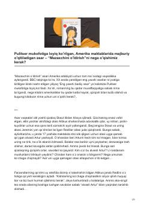

MOHarper Lining mashhur romaniga bagʻishlangan tahliliy va tarbiyaviy maqola.
Ushbu asar Harper Lining mashhur 'Mazaxchini oʻldirish' romanining ahamiyati, undagi ijtimoiy adolatsizlik va insoniylik masalalarini tahlil qiladi. Muallif asar voqealari, qahramonlar va uning Amerika jamiyatidagi oʻrni haqida fikr yuritib, kitobxonni adolat uchun kurashishga chorlaydi.